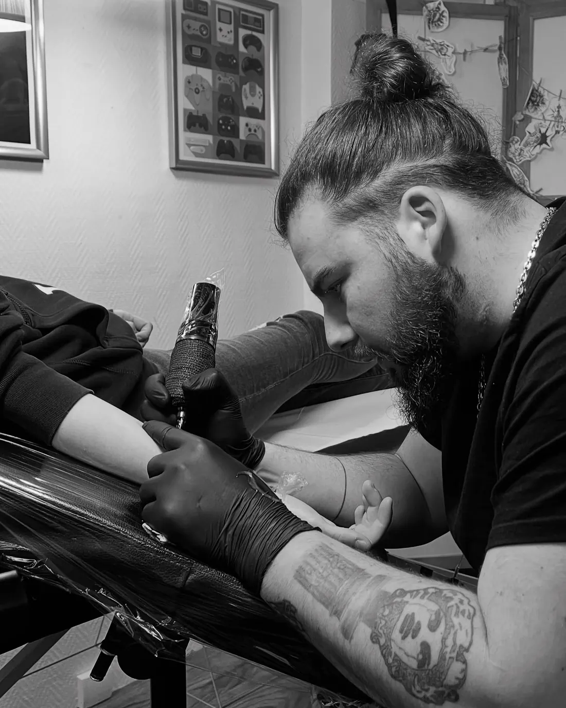
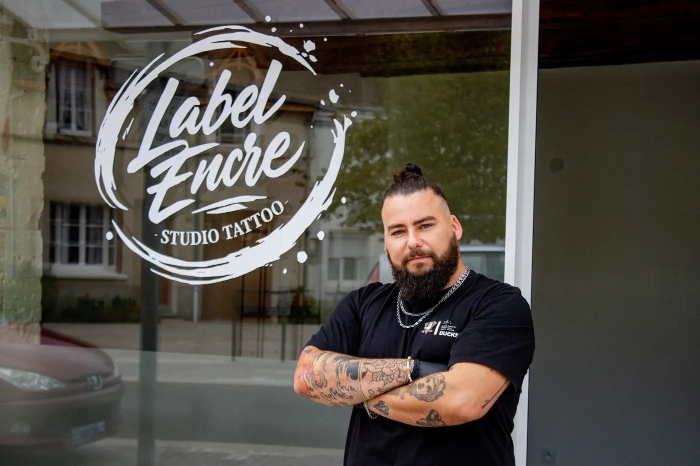

Yukaï, tatoueur à Reignac-sur-Indre
aka. Paul
Néo-traditionnel, ornemental, floral et fineline. Je dessine chaque pièce pour toi, au salon Label Encre, à 30 minutes de Tours.
Mon approche
Chaque tattoo commence par ton histoire.
Je la dessine à la main, je l'ajuste avec toi, puis je l'encre. Avec le Japon en fil rouge : ses sabres, ses fleurs, ses kanji.
Me raconter ton projet →Styles de tatouage
- Néo-traditionnel
- Lignes franches, ombrages profonds, sujets forts : sabres, crânes, figures.
- Ornemental
- Motifs symétriques et bijoux de peau qui épousent le corps.
- Floral
- Pivoines, lys araignée, feuillages. Des fleurs qui ont du caractère.
- Fineline
- Traits fins, lettrages et petites pièces tout en délicatesse.
Le travail
Une sélection de mes pièces. La suite, et les nouveautés, c'est sur Instagram.
Katana et higanbanaNéo-trad, Japon
Crâne de dragonNéo-trad
HiganbanaFloral, Japon
Bouddha et lotusNéo-trad, Floral
SagittaireNéo-trad
Loup et feuillagesFloral, Fineline
Croissant ornementalOrnemental
Dragon BallBlack and grey
Papillon bleuFloral
L'œilNéo-trad, Ornemental
Clé ornementaleOrnemental
LysFineline
Sabre et rubanNéo-trad, Japon
ClochettesFineline
BalanceFineline
KanjiJapon, Fineline
Tout part du papier
Pas de copier-coller : je dessine chaque projet à la main à partir de ton idée, et on l'ajuste ensemble avant la séance. Tu n'as pas encore d'idée précise ? C'est justement le moment d'en parler.
« C'est aussi un vrai dessinateur (pas juste une personne qui imprime et qui recopie des lignes). »
Ludovic B., avis Google
Et entre deux projets, je dessine des flashs ↓
Les flashs
Des motifs que j'ai dessinés, prêts à être tatoués. Idéal si tu veux te faire tatouer sans passer par un projet sur mesure : tu choisis, on cale la date, on tatoue.
Comment ça marche
- Repère le flash qui te plaît.
- Envoie-moi une capture en DM.
- Je te confirme sa dispo et on fixe la date.
Les planches évoluent au fil des semaines : certains motifs sont peut-être déjà partis. Les flashs du moment sont dans mes stories à la une « Flashs » sur @yukai.tattoo.
Moi, c'est Paul
J'ai fait mes armes au Château d'Encre, à Tours, avant d'ouvrir mon propre salon, Label Encre, à Reignac-sur-Indre, avec Marie.
Mon univers mélange néo-traditionnel, ornemental et floral, avec une vraie passion pour l'esthétique japonaise. Mais ce qui compte avant tout, c'est ton projet : je prends le temps d'écouter, de dessiner, et de t'expliquer.
« Un tatoueur vraiment talentueux, professionnel et à l'écoute. Le résultat est largement à la hauteur de mes attentes. »
Thomas C.
« Les tatouages ont été dessinés directement sur moi pour adapter à ma morphologie. »
Isabelle V.
« Une expérience superbe, et un tatouage magnifique. »
Lou
Écris-moi.
Pas de formulaire à rallonge : un message ou un appel suffit.
Écris-moi
En DM sur Instagram ou par téléphone. Raconte ton idée, l'emplacement, la taille, et envoie des images d'inspiration. Pour un flash, une capture suffit.
On en parle
On affine le projet ensemble et je te propose un tarif et une date.
Je dessine
Ton dessin est fait sur mesure, et on l'ajuste ensemble avant de tatouer.
On tatoue
Au salon Label Encre, à Reignac-sur-Indre. Tu repars avec les consignes de soins.
« Premier tatouage pour moi avec un peu d'appréhension au niveau de la douleur, il m'a tout de suite rassuré et mis à l'aise. »
Noémie P., avis Google
Prendre soin de ton tattoo
Pendant 2 à 3 semaines, 2 fois par jour
- Lave-toi les mains.
- Lave ton tattoo à l'eau claire et au savon pH neutre.
- Sèche avec un linge propre, sans frotter.
- Applique une crème cicatrisante en la faisant bien pénétrer.
À éviter
- Tous les bains : piscine, sauna, mer…
- Les frottements : animaux, sports de contact…
- Gratter ton tattoo (mieux vaut masser avec la crème).
- Et surtout : ne pas faire la crevette au soleil !
Le salon Label Encre
Tatouage et ongles sous le même toit, en plein cœur de Reignac-sur-Indre.

Adresse
Label Encre Studio Tattoo16 place du Bourg du Fau
37310 Reignac-sur-Indre
À environ 30 minutes de Tours, entre Cormery et Loches.
« Accueil chaleureux, le p'tit café qui va bien avant de laisser Paul réaliser notre projet. »
Ingrid B.
Horaires
| Lundi | 14h – 19h |
|---|---|
| Mardi | 10h – 19h |
| Mercredi | 10h – 17h |
| Jeudi | 10h – 19h |
| Vendredi | 10h – 19h |
| Samedi | 10h – 14h |
| Dimanche | Fermé |
Sur rendez-vous de préférence.
16 place du Bourg du Fau, Reignac-sur-Indre
Label Encre, c'est aussi Marie, prothésiste ongulaire. Retrouve son travail sur @longleriemagique.
« Je suis venu au salon de Paul pour faire mes ongles avec Marie. Accueil au top. »
Fanny P.